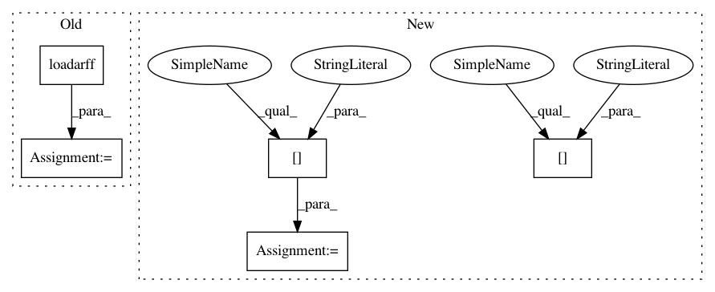

4257c4824d2ac9c8c0978b2696d77a68783dc2eb,openml/tasks/split.py,OpenMLSplit,_from_arff_file,#Any#Any#,61
Before Change
raise FileNotFoundError(
"Split arff %s does not exist!" % filename
)
splits, meta = scipy.io.arff.loadarff(filename)
name = meta.name
repetitions = OrderedDict()
After Change
"Split arff %s does not exist!" % filename
)
file_data = arff.load(open(filename), return_type=arff.DENSE_GEN)
splits = file_data["data"]
name = file_data["relation"]
attrnames = [attr[0] for attr in file_data["attributes"]]
repetitions = OrderedDict()
In pattern: SUPERPATTERN
Frequency: 3
Non-data size: 5
Instances
Project Name: openml/openml-python
Commit Name: 4257c4824d2ac9c8c0978b2696d77a68783dc2eb
Time: 2019-05-28
Author: neeratyoy@gmail.com
File Name: openml/tasks/split.py
Class Name: OpenMLSplit
Method Name: _from_arff_file
Project Name: sebp/scikit-survival
Commit Name: 73adba1983a3454f32e613fa4bfb8f00c42741cf
Time: 2016-12-28
Author: sebp@k-d-w.org
File Name: tests/test_nonparametric.py
Class Name: TestKaplanMeier
Method Name: test_whas500
Project Name: openml/openml-python
Commit Name: 4257c4824d2ac9c8c0978b2696d77a68783dc2eb
Time: 2019-05-28
Author: neeratyoy@gmail.com
File Name: openml/tasks/split.py
Class Name: OpenMLSplit
Method Name: _from_arff_file
Project Name: sebp/scikit-survival
Commit Name: 73adba1983a3454f32e613fa4bfb8f00c42741cf
Time: 2016-12-28
Author: sebp@k-d-w.org
File Name: tests/test_nonparametric.py
Class Name: TestNelsonAllen
Method Name: test_whas500